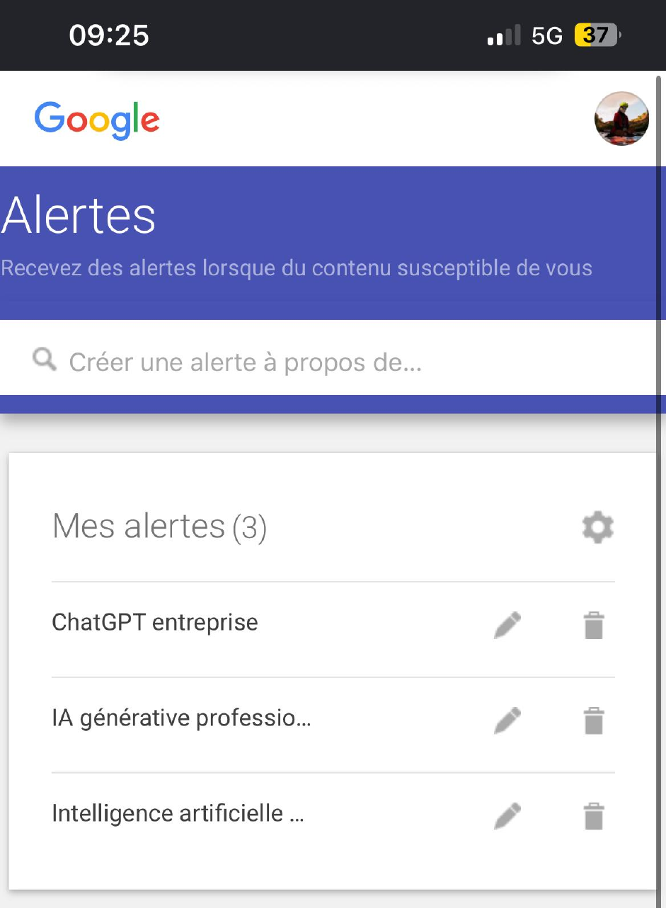
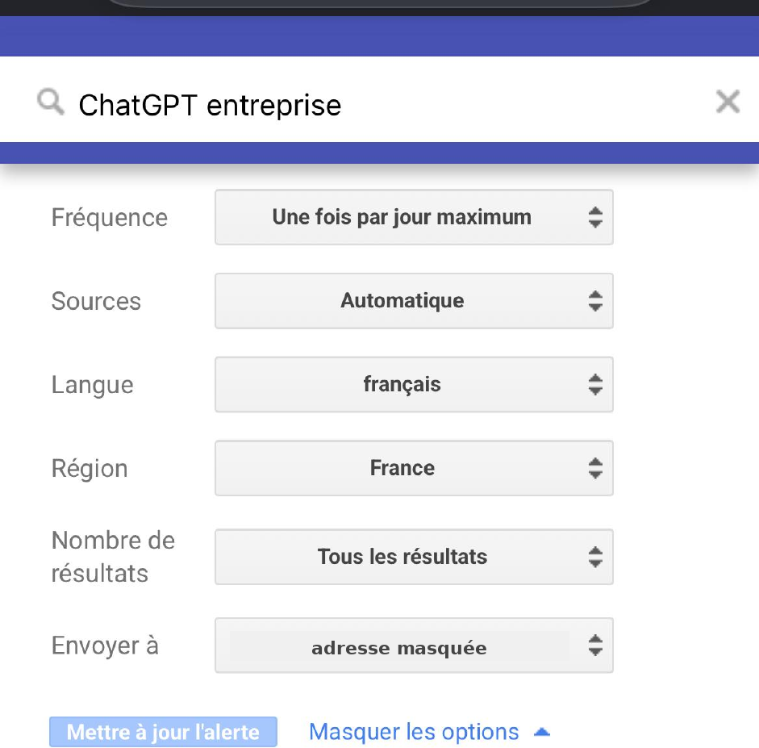
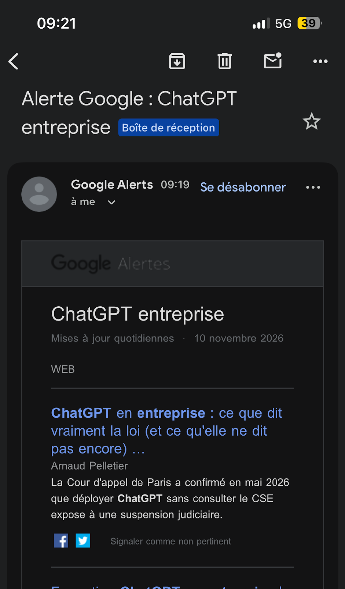

Ma veille technologique
Définition et méthode
La veille technologique consiste à rechercher régulièrement des informations sur les nouvelles
technologies pour rester informé, découvrir de nouvelles solutions et anticiper les changements.
Elle doit être régulière : une recherche faite une seule fois ne suffit pas.
- Définir un sujet précis.
- Rechercher des informations dans des sources adaptées.
- Collecter régulièrement les nouvelles publications.
- Trier les résultats.
- Analyser ce qui est important.
- Conserver et partager.
Mon sujet : l’intelligence artificielle dans les entreprises
Je surveille les nouveaux outils (ChatGPT, Microsoft Copilot, Google Gemini), leurs usages
professionnels (rédaction, assistance client, analyse de données, automatisation) et leurs enjeux
(protection des données, fiabilité, coût, impact sur les métiers).
J’ai choisi ce sujet parce que l’IA évolue vite et touche de nombreux métiers.
Avec mes boutiques en ligne, je veux comprendre comment l’utiliser pour mes projets.
Comparaison de trois outils
| Critère | Google Alertes | Feedly | Inoreader |
|---|
| Gratuit | Oui | Oui, version limitée | Oui, version limitée |
| Facilité d’utilisation | Très simple | Simple | Moyenne |
| Alertes par e-mail | Oui | Selon les fonctionnalités | Oui, selon les fonctionnalités |
| Regroupement des sources | Limité | Oui | Oui |
| Classement des articles | Limité | Oui | Oui |
Mon choix : Google Alertes. Il est gratuit, simple à utiliser et envoie les nouveautés
par e-mail sans demander de connaissances techniques.
Mon dispositif de notification
Google m’envoie un e-mail une fois par jour au maximum, en français et pour la France, dès qu’un
nouveau contenu correspond à mes mots-clés. Je n’ai pas à relancer les recherches moi-même.
| Alerte | Objectif |
|---|
| Intelligence artificielle entreprise | Suivre l’actualité générale de l’IA en entreprise. |
| IA générative professionnelle | Suivre les nouvelles technologies d’IA générative. |
| ChatGPT entreprise | Suivre les nouveautés de ChatGPT pour les professionnels. |

Mes trois alertes actives

Réglages de l’alerte « ChatGPT entreprise »

E-mail reçu le 10 novembre 2026
Ce que ma veille m’apprend
26 %
des TPE et PME françaises utilisent l’IA, un chiffre doublé en un an.
France Num, baromètre 2025
18 %
des entreprises en France utilisaient l’IA en 2025, contre 10 % en 2024.
INSEE, juillet 2026
20 %
des entreprises européennes en 2025, contre 13,5 % en 2024.
Eurostat, décembre 2025
28 %
des entreprises qui utilisent l’IA s’en servent pour le marketing et les ventes.
INSEE, octobre 2025
Je retiens que l’IA progresse partout, que les grandes entreprises ont de l’avance
et qu’elle sert aussi à la vente, à la comptabilité et à l’administration.
Mon journal de veille
| Date | Source | Ce que j’en retiens |
|---|
| 10/11/2026 |
Alerte Google « ChatGPT entreprise » : article « ChatGPT en entreprise : ce que dit vraiment la loi » |
La Cour d’appel de Paris a confirmé en mai 2026 que déployer ChatGPT sans consulter le CSE expose une entreprise à une suspension judiciaire. Une entreprise doit informer ses représentants avant d’introduire un outil d’IA. |
| Nov. 2026 |
France Num : baromètre 2025 |
26 % des TPE et PME utilisent l’IA, surtout l’IA générative (22 %). Les petites entreprises commencent à s’y mettre. |
| Nov. 2026 |
INSEE : l’IA dans les entreprises (juillet 2026) |
18 % des entreprises utilisaient l’IA en 2025, contre 10 % en 2024. L’écart de taille est fort : 9 % pour 10 à 49 salariés, 58 % pour 250 salariés ou plus. |
| Nov. 2026 |
Eurostat : l’IA dans les entreprises (décembre 2025) |
La France est à 18,2 % contre 20 % pour l’Europe, loin du Danemark (42 %). Les pays avancent à des vitesses très différentes. |
| Nov. 2026 |
INSEE : les usages de l’IA (octobre 2025) |
Marketing et ventes (28 %), production (27 %), comptabilité (25 %). L’IA touche plusieurs métiers de l’entreprise. |
Mes sources
- France Num : baromètre sur le numérique des TPE et PME.
- INSEE : statistiques officielles sur les entreprises françaises.
- Eurostat : statistiques européennes pour comparer les pays.
- Google Alertes : mon outil de notification.
Ce sujet pourra être présenté à l’épreuve E5, et je pourrai le changer en deuxième année.